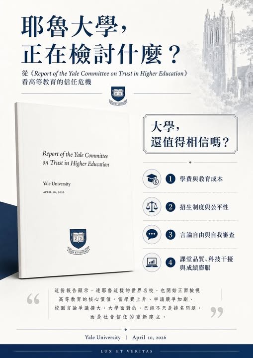

《看懂制度，選對世界》第一集
耶魯大學的高教信任危機報告
最近耶魯大學發表了一份值得所有教育工作者、家長與學生細讀的報告：《Report of the Committee on Trust in Higher Education》。

最近耶魯大學發表了一份值得所有教育工作者、家長與學生細讀的報告：《Report of the Committee on Trust in Higher Education》。這份報告由耶魯校長 Maurie McInnis 於 2025 年 4 月委託校內教授委員會進行，2026 年 4 月正式提交，主題聚焦在「高等教育信任危機」。報告開頭便指出， 57% 的美國人對高等教育抱持高度信任，到了 2024 年降至 36%。
這份報告之所以引起討論，關鍵並非耶魯出了什麼單一事件，而是連耶魯這樣的世界級名校，也開始正面檢討：大學到底提供了什麼價值？學生與家庭付出高昂學費後，得到的是知識、能力、思辨與人生選擇，還是名校光環與履歷符號？耶魯點出的第一個問題，是 耶魯後續也宣布，從 2026–2027 學年起，年收入低於 20 萬美元的家庭，可獲得至少涵蓋學費的助學金；年收入低於 10 萬美元的家庭，則可涵蓋完整就學成本。
第二個問題，是 2025 年成立， 成績，同時強調 第三個問題，是 年校內調查中，將近三分之一的大學生受訪者對「我在校園裡可以自由表達政治觀點」這句話表示有疑慮，這個比例高於 2015 年的 17%。這代表頂尖大學面臨的挑戰，已經從「誰能進入名校」延伸到「進入名校後，學生是否還敢思考、發問與辯論」。更值得注意的是，耶魯把課堂本身重新放回中心。報告建議 GPA 標準，或在成績單上加入班級百分位等資訊。對台灣家長與學生來說，這份耶魯報告有一個重要提醒：選大學，已經無法只看排名、校名與錄取率。
真正該問的是，這所大學如何教學生思考？如何評量學生能力？如何面對不同觀點？如何讓學生把知識轉化為未來的專業、責任與選擇？耶魯這次的檢討，最值得肯定的地方，在於它沒有把危機推給外界，而是承認高等教育本身也有盲點。對國際教育而言，這也是一個重要訊號：未來學生需要的，不只是進入名校的能力，更是判斷一所大學是否值得投入四年青春與家庭資源的能力。進大學，